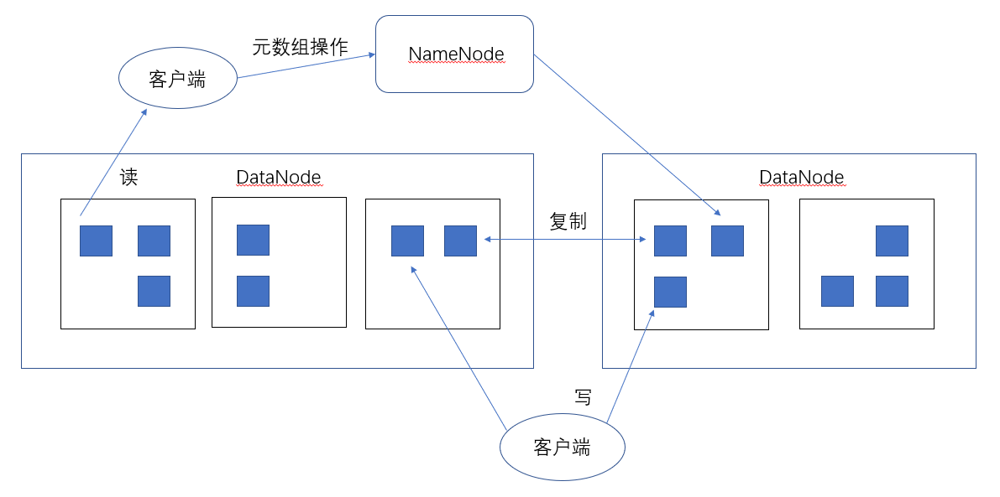
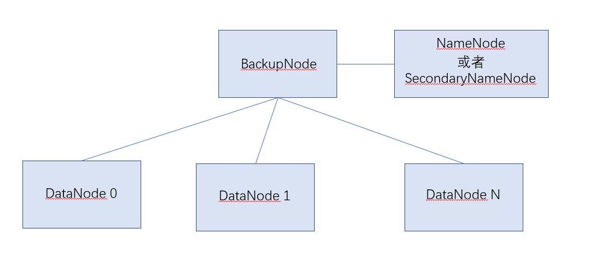
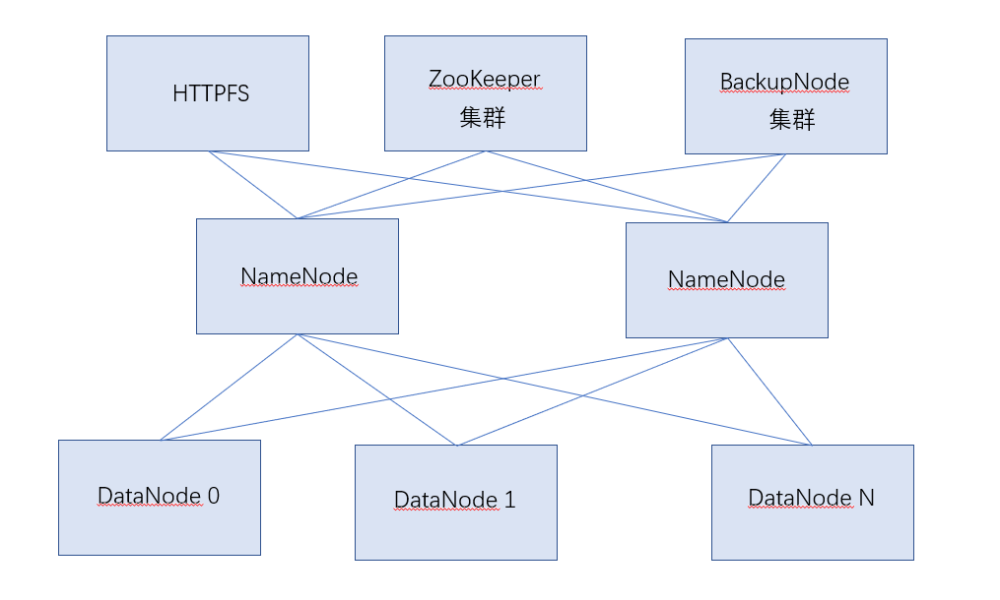
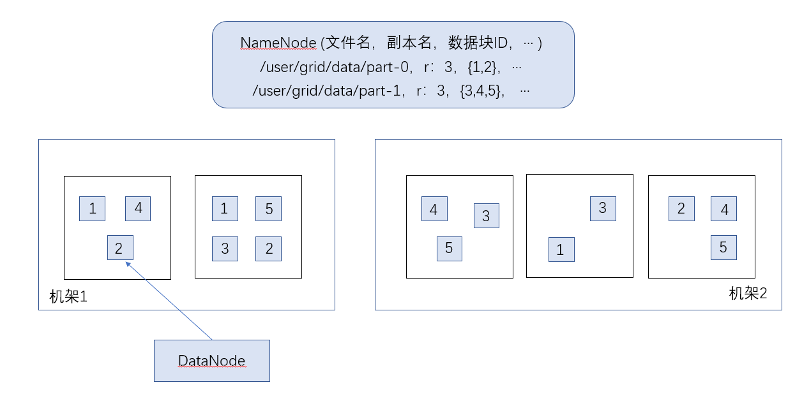

2019-10-10
123
原创
分布式文件管理系统HDFS
Hadoop 分布式文件管理系统HDFS可以部署在廉价硬件之上，能够高容错、 可靠地存储海量数据(可以达到TB甚至PB级)，它还可以和Yam中的MapReduce 编程模型很好地结合，为应用程序提供高吞吐量的数据访问，适用于大数据集应用程序。
1.定位
HDFS的定位是提供高容错、高扩展、高可靠的分布式存储服务， 并提供服务访问接口(如API接口、管理员接口)。
为提高扩展性，HIDFS采用了master/slave架构来构建分布式存储集群， 这种架构很容易向集群中随意添或删除slave。HDFS里用系列块来存储一个文件， 并且每个快都可以设置多个副本， 采用这种块复制机制，即使集群中某个slave 机宕机，也不会丢失数据， 这大大增强了HDFS的可靠性。由于存在单master节点故障， 近年来围绕主节点master衍生出许多可靠性组件。
2.HDFS体系架构
理解HDFS架构是理解HDFS的关键，下面对于HDFS架构的介绍这一节， 只保留了HDFS最关键的两个实体 namenode 和datanode, 而在HDFS典型拓扑中则会讲解HDFS部署的典型拓扑，这些拓扑中除了最关键的两个实体外， 新增加的实体都是功能 和或可靠性增强型组件，并不是必需的。
1)HDFS架构
HDFS采用master/slave体系来构建分布式存储服务， 这种体系很容易向集群中添加去或删除slave, 既提高了HDFS 的可扩展性又简化了架构设计。 另外，为优化存储颗粒度，HDFS里将文件分块存储， 即将一个文件按固定块长(默认128M)划分为一系列块， 集群中，master 机运行主进程namenode, 其他所有slave 都运行从属进程datanode. namenode 统一管理所有 slave机器datanode存储空间，但它不做数据存储， 它只存储集群的元数据信息(如文件块位置、大小、拥有者信息)， datanode 以块为单位存储实际的数据。客户端联系namenode以获取文件的元数据， 而真正的文件1/O操作时客户端直接和datanode交互。
NameNode就是主控制服务器， 负责维护文件系统的命名空间(Namespace)井协调客户端对文件的访问， 记录命名空间内的任何改动或命名空间本身的属性改动。 DataNode负责它们所在的物理节点上的存储管理， HDFS 开放文件系统的命名空间以便让用户以文件的形式存储数据。 HDFS的数据都是“一次写入、多次读取"，典型的块大小是128MB通常按照128MB为个分割单位， 将HDFS的文件切分成不同的数据块(Block), 每个数据块尽可能地分放存储于不同的DataNode中。NameNode 执行文料素统的命名空间操作， 比如打开、关闭、重命名文件或目录，还决定数据块到Dann米的映射， DataNode 负责处理客户的读/写请求，依照NameNode的命令，执行数据创建、复制、 删除等工作。图是HDPFS的结构不意图。例如客户端要访问来的件，首先， 客户端从NameNode获得组成文件的数据块的位置列表，也就是知道数据块被存储在那些DataNode 上；其次，客户端直接从DataNode上读取文件数据。NameNode不参与文件的传输。
NameNode使用事务日志(EditLog) 记录HDFS元数据的变化， 使用映象文件(Fslmage)存储文件系统的命名空间，包含文件的映射、文件的属性信息等。 事务日志和映象文件都存储在NameNode的本地文件系统中。
NameNode启动时，从磁盘中读取映象文件和事务日志， 把事务日志的事务都应用到内存中的映象文件上， 然后将新的元数据刷新到本地磁盘的新的映象文件中，这样可以截去旧的事务日志， 这个过程称为检查点(Checkpoint)。 HDFS还有Secondary NameNode节点， 它辅助NameNode处理映象文件和事务日志。NameNode启动的时候合并映象文件和事务日志， 而Secondary NameNode会周期地从NameNode上复制映象文件和事务日志到临时目录， 合并生成新的映象文件后再重新上传到NameNode, NameNode 更新映象文件并清理事务日志， 使得事务日志的大小始终控制在可配置的限度下。
2)HDFS典型拓扑
HDFS典型拓扑包括如下两种:
(1)一般拓扑(见图)。 只有单个NameNode 节点， 使用SecondaryNameNode或BackupNode节点实时获取NameNode元数据信息，备份元数据。
(2)商用拓扑（见图）：有两个NameNode节点，并使用ZooKeeper实现NameNode节点间的热切换。
ZooKeeper集群:至少三个ZooKeeper实体，用来选举ActiveNamenode。
JourNalNode集群：至少三个，用于与两Namenode交换数据，也可使用NFS.
HTTPFS:提供Web端读/写HDFS功能。
从架构上看HDFS存在单点故障，无论是一般拓扑还 是商用拓扑， 新增的实体几乎都是增强NameNode可靠性的组件，当然这 里的ZooKeeper集群还可以用于Hbase.
3.HDFS内部特性
1)冗余备份
HDFS将每个文件存储成一系列数据块(Block), 默认块大小为128MB (可配置)。 为了容错，文件的所有数据块都会有副本(副本数量即复制因子，可配置)。 HDFS的文件都是一次性写入的，并且严格限制为任何时候都只有一个写用户， DataNode使用本地文件系统存储HDFS的数据，但是它对HDFS的文件无所知， 只是用一个个文件存储HDFS的每个数据块。当DataNode启动时，它会遍历本地文件系统， 产生一份HDFS数据块和本地文件对应关系的列表，并把这个报告发给NameNode, 这就是块报告(BlockReport)。 块报告包括了DataNode上所有块的列表。
2)副本存放
HDFS集群一般运行在多个机架上，不同机架上机器的通信需要通过交换机。 通常情况下，副本的存放策略很关键，机架内节点之间的带宽比跨机架节点之间的带宽要大， 它能影响HDFS的可靠性和性能。HDFS采用机架感知(Rack-aware)的策略来改进数据的可靠性、 可用性和网络带宽的利用率。通过机架感知，NameNode 可以确定每个DataNode所属的机架ID。 般情况下， 当复制因子是3时，HDFS 的部署策略是将一个副本存放在本地机架上的节点， 一 个副本放在同一机架上的另一个节点，最后一个副本放在不同机架上的节点。 机架的错误远比节点的错误少，这个策略可以防止整个机架失效时数据丢失， 提高数据的可靠性和可用性，又能保证性能。图体现了复制因子为3的情况下， 各数据块的分布情况。
3)副本选择
HDFS会尽量使用离程序最近的副本来满足用户请求，这样可以减少总带宽消耗和读延时。 如果在读取程序的同一个机架上有一个副本，那么就使用这个副本；如果 HDFS机群跨了多个数据中心，那么读取程序将优先考虑本地数据中心的副本。
HDFS的架构支持数据均衡策略。如果某个DataNode的剩余微盘空间下降到一定程度， 按照均衡策略，系统会自动把数据从这个DataNode移动到其他节点。 当对某个文件有很高的需求时，系统可能会启动一个计 划创建该文件的新副本， 并重新平衡集群中的其他数据。
4)心跳检测
NameNode周期性地从集群中的每个DataNode 接受心跳包和块报告， 收到心跳包说明该DataNode工作正常。NameNode 会标记最近没有心跳的DataNode 为宕机， 不会发给它们任何新的I/O请求。任何存储在宕机的DataNode 的数据将不再有效， DataNode的宕机会造成些数据块的副本数下降并低于指定值。 NameNode会不断检测这些需要复制的数据块，并在需要的时候重新复制。 重新复制的引发可能有多种原因，比如DataNode不可用、数据副本的损坏、 DataNode 上的磁盘错误或复制因子增大等。
5)数据完整性检测
多种原因可能造成从DataNode 获取的数据块有损坏。 HDFS客户端软件实现了对HDFS文件内容的校验和检查(Checksum), 在创建HDFS文件时，计算每个数据块的校验和， 并将校验和作为一个单独的隐藏文件保存在命名空间下。当客户端获取文件后， 它会检查从DataNode获得的数据块对应的校验和是否和隐藏文件中的相同，如果不同， 客户端就会判定数据块有损坏，将从其他DataNode获取该数据块的副本。
6)元数据磁盘失效
映象文件和事务日志是HDFS的核心数据结构。如果这些文件损杯，会导致HDFS不可用。 NameNode 可以配置为支持维护映象文件和事务日志的多个副本，任何对映象 文件或事务日志的修改，都将同步到它们的副本上。这样会降低NameNode处理命名空 间事务的速度，然而这个代价是可以接受的，因为HDFS是数据密集的，而非元数据密集的。 当NameNode重新启动时，总是选择最新的一致的映象文件和事务日志。
7)简单一致性模型、流式数据访问
HDFS的应用程序一般对文件实行一次写、多次读的访问模式。文件一旦创建、 写入和关闭之后就不需要再更改了。 这样就简化数据一致性问题、高吞吐量的数据访问才成为可能； 运行在HDFS上的应用主要以流式读为主，做批量处理；更注重数据访向的高吞吐量。
8)客户端缓存
客户端创建文件的请求不是立即到达NameNode， HDFS 客户端先把数据缓存到本地的 一个临时文件，程序的写操作透明地重定向到这个临时文件。当这个临时文件累积的 数据超过一个块的大小(128MB)时，客户端才会联系NameNode。 NameNode 在文件 系统中插入文件名，给它分配个数据块， 告诉客户端 DataNode的ID和目标数据块ID, 这样客户端就把数据从本地的缓存刷新到指定的数据块中。当文件关闭后， 临时文件中剩余的未刷新数据也会被传输到DataNode 中，然后客户端告诉NameNode 文件已关闭，此时NameNode才将文件创建操作写入日志进行存储。 如果NameNode在文件关闭之前死机，那么文件将会丢失。如果不采用客户端缓存， 网络速度和拥塞都会对输出产生很大的影响。
9)流水线复制
当客户端准备写数据到HDFS的文件中时，就像前面介绍的那样，数据开始会写入本地临时文件。 假设该文件的复制因子是3,当本地临时文件累积到一个数据块的大小时， 客户端会从NameNode获取一个副本存放的DataNode列表， 列表中的DataNode都将保存那个数据块的一个副本。 客户端首先向第一个DataNode 传输数据，第一个DataNode一小块一小块 (4KB)地接收数据， 写入本地库的同时，把接受到的数据传输给列表中的第二个DataNode； 第二个DataNode 以同样的方式边收边传，把数据传输给第三个DalaNode； 第三个DaNode把数据写入本地库。DataNode 从前一个节点接收数据的同时， 即时把数据传给后面的节点，这就是流水线复制。
10)架构特征
硬件错误是常态而不是异常。HDFS被设计为运行在普通硬件上，所以硬件故障是很正常的。 HDFS 可能由成百上千的服务器构成， 每个服务器上都存储着文件系统的部分数据面HDFS的每个组件随时都有可能出现故障。 因此，错误检测并快速自动恢复是HDFS的最核心设计目标。
11)超大规模数据集
一般企业级的文件小可能都在TB级甚至PB级，HDFS支持大文件存储，而且提供整体上高的数据传输带宽， 一个单一的HDFS实例应该能支撑数以千万计的文件，并且能在一个集群里扩展到数百个节点。
4.HDFS对外功能
除了提供分布式存储这一主要功能外，HDFS还提供了以下常用功能：
1)NameNode高可靠性
由于master/slave架构天生存在单master缺陷，因此，HDFS里配置两个甚至更多NameNode。 一般部署时，常用的SecondaryNameNode 或 BackupNode只是确保存储于NameNode的元数据多处存储， 不提供NameNode 其他功能；双NameNode时，一旦正在服务的NameNode失效， 备份的NameNode会瞬间替换失效的NameNode，提供存储主服务。
2)HDFS快照
快照支持存储某个时间点的数据复制，当HDFS数据损坏时，可以回渡到过去一个已知正确的时间点。
3)元数据管理与恢复工具
这是Hadoo 2.0新增加的功能，用户可以使用"hdfs oiv和"hdfs oev"命令， 管理修复fsimage与edits, fsimage 存储了HDFS元数据信息，而edits存储了最近用户对集群的更改信息。
4)HDFS安全性
新的HDFS相对于以前HDFS的最大改进就是提供了强大的安全措施，HDFS安全措施包括两个方面: 用户与文件级别安全认证，机器与服务级别安全认证。
用户与文件级别安全认证几乎类似于Linux, HDFS里超级用户为HDFS用户，也有添加用户更改文件属性等概念。
机器与服务级别安全认证则是Hadoop 特有的概念，分布式环境下， 启动NameNode或DataNode的这台机器是否合法，访问NameNode 的这个用户是否取得凭证， 凭证允许时间多长，这些都是应当关注的问题， Kerberos 即是完成这类跨网络认证的最好的第三方工具， HDFS本身没有实现Kerberos认证的任何功能，而是在需要认证时询问是否有Kerheros凭证罢了， 比如运行DataNode的cSlave0服务饮向cMaster 运行的NameNode服务发送心跳包， 在使用Kerberos 认证时，cSlavco 有凭证则cMaster接收发过来的心跳包，否则cMaster不接收。
5)HDFS配额功能
此功能类似于Linux配额管理，主要管理目录或文件配额大小。
6)HDFS C 语言接口
其提供了C语言操作Hdfs接口。
7)HDFS Short-Circuit功能
在HDFS服务里，对于数据的读操作都需要通过DataNode，也就是客户端想要读取某个文件时， DataNode首先从磁盘读卖取数据，接着通过TCP端口将这些数据发送到客户端。而所谓的Short- -Circuit指的是读时绕开DataNode，即客户端直接读取硬盘上 的数据。显然，只有在客户端的和DataNode是同一台机器时，才可以实现Short-Circuit， 但由于MapRedu里Map阶段一般都是处理本台数据，这一点改进也大大提高数据处理效率。
8)WebHdfs
此功能提供了Web方式操作HDFS。在以前版本中，若需要在HDFS里新建目录，写入数据，一般都通过 命令行接口或编程接口突现，现在，使用WebHdfs可直接在Web里对HDFS进行插、删、该、查操作， 提高了效率。
方法论
Comments
這對我的研究是非常有用.謝謝!